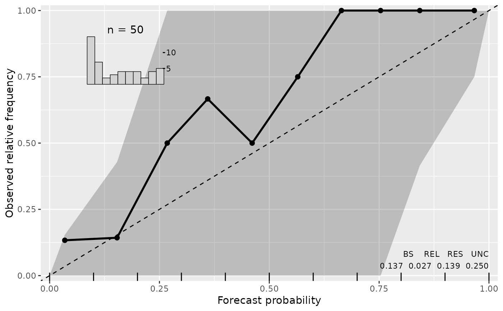
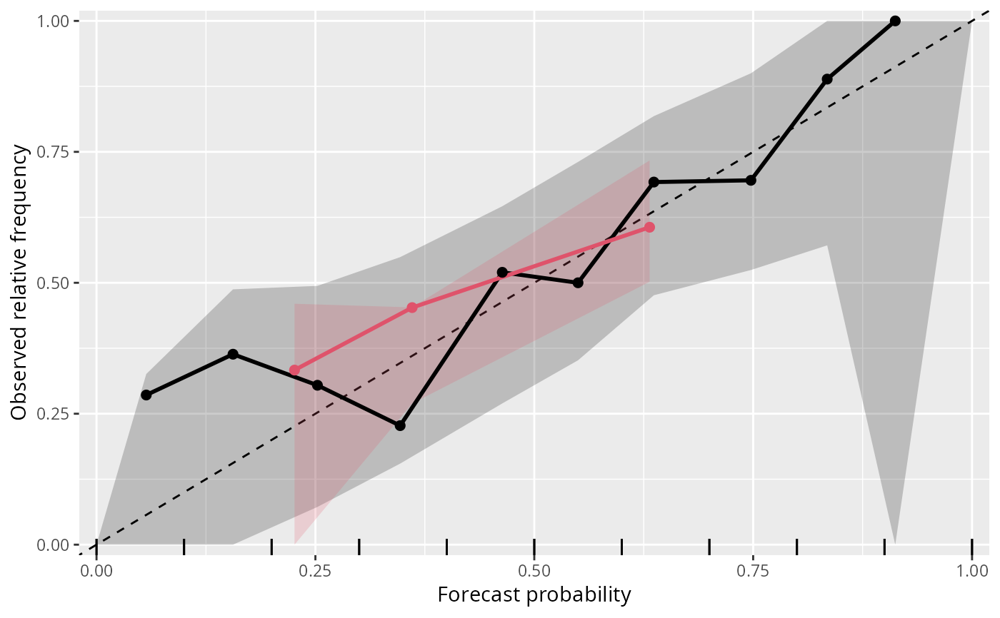

reliagram.RdReliagram (extended reliability diagram) assess the reliability of a fitted
probabilistic distributional forecast for a binary event. If plot =
TRUE, the resulting object of class "reliagram" is plotted by
plot.reliagram or autoplot.reliagram before it is
returned, depending on whether the package ggplot2 is loaded.
reliagram(object, ...) # S3 method for default reliagram( object, newdata = NULL, plot = TRUE, class = NULL, breaks = seq(0, 1, by = 0.1), quantiles = 0.5, thresholds = NULL, confint = TRUE, confint_level = 0.95, confint_nboot = 250, confint_seed = 1, single_graph = FALSE, xlab = "Forecast probability", ylab = "Observed relative frequency", main = NULL, ... )
| object | an object from which an extended reliability diagram can be
extracted with |
|---|---|
| ... | further graphical parameters. |
| newdata | optionally, a data frame in which to look for variables with which to predict. If omitted, the original observations are used. |
| plot | Should the |
| class | Should the invisible return value be either a |
| breaks | numeric vector passed on to |
| quantiles | numeric vector of quantile probabilities with values in
[0,1] to calculate single or several thresholds. Only used if
|
| thresholds | numeric vector specifying both where to cut the
observations into binary values and at which values the predicted
probabilities should be calculated ( |
| confint | logical. Should confident intervals be calculated and drawn? |
| confint_level | numeric. The confidence level required. |
| confint_nboot | numeric. The number of bootstrap steps. |
| confint_seed | numeric. The seed to be set for the bootstrapping. |
| single_graph | logical. Should all computed extended reliability diagrams be plotted in a single graph? |
| xlab, ylab, main | graphical parameters. |
An object of class "reliagram" inheriting from
"data.frame" or "tibble" conditional on the argument class
with the following variables:
forecast probabilities,
observered/empirical relative frequencies,
lower and upper bound of the binned forecast probabilities,
number of predictions within the binned forecasts probabilites,
lower and upper confidence interval bound.
Reliagrams evaluate if a probability model is calibrated (reliable) by first
partitioning the predicted probability for a binary event into a certain number
of bins and then plotting (within each bin) the averaged forecast probability
against the observered/empirical relative frequency. For computation,
reliagram leverages the procast generic to
forecast the respective predictive probabilities.
For continous probability forecasts, reliability diagrams can be computed either for a pre-specified threshold or for a specific quantile probability of the response values. Per default, reliagrams are computed for the 50%-quantile of the reponse.
In addition to the plot and autoplot method for
reliagram objects, it is also possible to combine two (or more) reliability
diagrams by c/rbind, which creates a set of reliability diagrams
that can then be plotted in one go.
Note that there is also a reliability.plot function in the
verification package. However, it only works for numeric
forecast probabilities and numeric observed relative frequencies, hence a function has been
created here.
Wilks DS (2011) Statistical Methods in the Atmospheric Sciences, 3rd ed., Academic Press, 704 pp.
link{plot.reliagram}, procast
## speed and stopping distances of cars m1_lm <- lm(dist ~ speed, data = cars) ## compute and plot reliagram reliagram(m1_lm)#------------------------------------------------------------------------------- ## determinants for male satellites to nesting horseshoe crabs data("CrabSatellites", package = "countreg") ## linear poisson model m1_pois <- glm(satellites ~ width + color, data = CrabSatellites, family = poisson) m2_pois <- glm(satellites ~ color, data = CrabSatellites, family = poisson) ## compute and plot reliagram as base graphic r1 <- reliagram(m1_pois, plot = FALSE) r2 <- reliagram(m2_pois, plot = FALSE) ## plot combined reliagram as "ggplot2" graphic ggplot2::autoplot(c(r1, r2), single_graph = TRUE, col = c(1, 2), fill = c(1, 2))